For judges · no wallet, no sign-in
Heirloom in one page.
When your wallet goes quiet, silence pays your heir. A Reactive dead-man's switch: no keeper, no check-in required, spoofs refused.

01The 30-second path
Every link is a real transaction on a public explorer. The demo instance ran with T = 5 min on 2026-11-08 (UTC).
- Open the live status card. It reads both testnet instances straight from the chain. At the last evidence refresh (2026-11-09 00:19 UTC) the 90-day one was armed; the demo one is released. edycutjong.github.io/heirloom/status/
- Silence opens a grace window. A Reactive CRON tick saw no owner activity for T, so the reactive contract asked the Base vault to enter GRACE. CRON 0x9535fa9d…10a0 → react 0xe4d5fb4d…4e5d → callback 0xde28408b…9488
- An ordinary owner transfer cancels it. No button: a token transfer on Base Sepolia was the proof of life. origin 0x2082f0bc…ef00 → react 0x99bb1f22…99fe → callback 0x217b43e3…90ce
- A $0 transfer from a non-owner wallet is refused.
transferFrom(owner, you, 0)from another wallet (here the heir's key); the long-T reactive contract loggedSpoofRefusedwith reasonZERO_VALUE. origin 0x777b953e…4d79 → react 0xb622bc82…f226 - Silence again, grace runs out, the heir is paid. EXPIRE makes the vault claimable; the two-step claim (anyone may press; here the owner key pressed both) pays the heir (
0x440E…438b), or an address the heir redirects it to. EXPIRE callback 0xabb5147f…0401 · initiateClaim 0xf86669ab…de8d · finalizeClaim 0x13d8677c…80d3 - The contract cleans up after itself. After the payout,
react()removed its own subscriptions: the finished demo instance holds 0 filters on Lasna. teardown 0x1eb6d631…a988 · check command in DEMO.md
02Receipts
Each number has a file behind it in the repo.
| Measure | Value | Source |
|---|---|---|
| Rows in the triple log (origin or CRON → reactive → callback) | 58 (31 with a callback leg: 22 from Heirloom instances (19 CRON-triggered, 3 owner-transfer CANCELs) and 9 from day-1 probes, 2 of them deliberately failed) | evidence/triples.csv |
| Demo instance callbacks acknowledged | 5 of 5, 0 resends | evidence/status.json, evidence/demo-summary.json |
| Demo scenario | 2 graces, 1 cancel, 1 expiry, claim, teardown | evidence/demo-summary.json |
Contract tests (forge test) | 169 passed | test/ |
Shared kit tests (FOUNDRY_PROFILE=kit forge test) | 27 passed | packages/reactive-kit/test/ |
TypeScript tests (pnpm test:coverage) | 27 passed | packages/reactive-kit/ts/ |
Line coverage: src/ contracts · kit contracts · TypeScript kit | 616/616 · 64/64 · 131/131 | CI Stage 1 gate; branches 203/204 in src/ (the one left is an unreachable guard, HeirloomReactive.sol:509, allowed by name) |
03Reproduce it yourself
The real path: fire a spoof from any Base Sepolia wallet against the long-T instance and watch the reactive contract refuse it on Lasna. Its testnet lREACT balance runs low between top-ups; if it has run dry, the reactive leg will not appear.
git clone --recurse-submodules https://github.com/edycutjong/heirloom && cd heirloom
pnpm install
PRIVATE_KEY=0x… pnpm exec tsx scripts/trigger-spoof.ts # any Base Sepolia key with a little ETH; sends a real txCI / deterministic replay (not the product, no network): forge test && FOUNDRY_PROFILE=kit forge test && pnpm test:coverage. No key? pnpm exec tsx scripts/trigger-spoof.ts --dry-run simulates the same call with eth_call and sends nothing.
04Honest limits
- No mainnet evidence yet. The mainnet deploy is scripted, not run. Every transaction on this page is testnet.
- Two builds on testnet. The 11-08 demo and the 90-day instance predate the re-entry lock,
coverDebt()and the claim-grace fix; thedemo-headinstance (2026-11-22,201eb1e) ran the full lifecycle on the current contract source. - Native ETH and silent grace. Native ETH transfers emit no ERC-20
Transferlog, so they are not proof of life, and nobody is notified when a grace window opens.